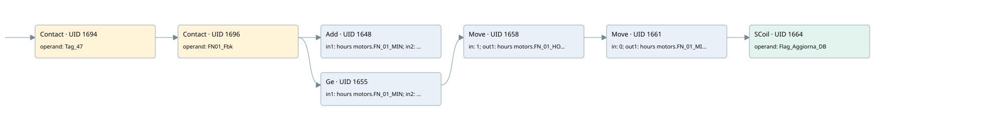

fn-01
time work motor · 검색 색인 순서 27 · 원본 내부 NID 추정 30
백업 PLF 원본의 2878671 바이트 위치에서 복원한 XML. 검색 문서 1028의 객체 키 161022003012000000000000와 연결했다. 이름 해석 12/12개. 남은 RefId는 상수 또는 미해석 참조다.
연결 구조 다시 그리기
원본 Part/PCon/Wire를 이용한 연결도다. TIA 화면의 래더 배치 또는 실행 결과를 재현한 그림은 아니다. 핀 연결은 아래 표와 원본 XML을 기준으로 읽는다. 노드 위에 마우스를 두면 피연산자 이름을 볼 수 있다.

접점·코일·블록과 피연산자
| Part UID | Gate | Negated 핀 | 연결 피연산자 |
|---|---|---|---|
| 1694 | Contact | operand = Tag_47 | |
| 1696 | Contact | operand = FN01_Fbk | |
| 1648 | Add | in1 = hours motors.FN_01_MIN; in2 = 1; out = hours motors.FN_01_MIN | |
| 1655 | Ge | in1 = hours motors.FN_01_MIN; in2 = 60 | |
| 1658 | Move | in = 1; out1 = hours motors.FN_01_HOUR | |
| 1661 | Move | in = 0; out1 = hours motors.FN_01_MIN | |
| 1664 | SCoil | operand = Flag_Aggiorna_DB |
접점 경로를 펼친 조건식
Contact·O/A·비교기의 원본 연결을 읽기 쉽게 펼친 보조 해석이다. POWER는 전원 레일 시작을 뜻한다. 호출 블록·에지·타이머의 내부 동작과 다중 쓰기 순서는 이 표로 실행 검증하지 않았다. 미해석 핀과 RefId는 원문 연결표에서 확인한다.
| UID | 동작 | 대상 | 원본 접점 경로 | 내용 |
|---|---|---|---|---|
| 1658 | Move | hours motors.FN_01_HOUR | ((Tag_47 AND FN01_Fbk) AND [hours motors.FN_01_MIN >= 60]) | Move 입력 1 |
| 1661 | Move | hours motors.FN_01_MIN | Move UID 1658.eno (블록 동작 확인) | Move 입력 0 |
| 1664 | SCoil | Flag_Aggiorna_DB | Move UID 1661.eno (블록 동작 확인) | 조건 성립 시 Set |
원본 배선 연결
| Wire UID | 동일 Wire 연결 끝점 |
|---|---|
| 1698 | Powerrail {} ↔ Part 1694.in |
| 1677 | ORef 1665 (Tag_47) ↔ Part 1694.operand |
| 1695 | Part 1694.out ↔ Part 1696.in |
| 1678 | ORef 1666 (FN01_Fbk) ↔ Part 1696.operand |
| 1697 | Part 1696.out ↔ Part 1648.en ↔ Part 1655.pre |
| 1679 | ORef 1667 (hours motors.FN_01_MIN) ↔ Part 1648.in1 |
| 1680 | ORef 1668 (1) ↔ Part 1648.in2 |
| 1681 | Part 1648.out ↔ ORef 1669 (hours motors.FN_01_MIN) |
| 1682 | ORef 1670 (hours motors.FN_01_MIN) ↔ Part 1655.in1 |
| 1683 | ORef 1671 (60) ↔ Part 1655.in2 |
| 1684 | Part 1655.out ↔ Part 1658.en |
| 1686 | ORef 1672 (1) ↔ Part 1658.in |
| 1688 | Part 1658.eno ↔ Part 1661.en |
| 1687 | Part 1658.out1 ↔ ORef 1673 (hours motors.FN_01_HOUR) |
| 1689 | ORef 1674 (0) ↔ Part 1661.in |
| 1691 | Part 1661.eno ↔ Part 1664.in |
| 1690 | Part 1661.out1 ↔ ORef 1675 (hours motors.FN_01_MIN) |
| 1692 | ORef 1676 (Flag_Aggiorna_DB) ↔ Part 1664.operand |
식별자 해석 근거 12개
| ORef UID | RefId | 이름 | IdentXmlPart 파일 | 해석 방법 |
|---|---|---|---|---|
| 1665 | 1 | Tag_47 | 0613-IdentXmlPart.xml | UID/RID + search-text + NID agreement |
| 1666 | 182 | FN01_Fbk | 0613-IdentXmlPart.xml | UID/RID + search-text + NID agreement |
| 1667 | 184 | hours motors.FN_01_MIN | 0615-IdentXmlPart.xml | UID/RID + search-text + NID agreement |
| 1668 | 7 | 1 | 0616-IdentXmlPart.xml | literal candidate: UID/RID/NID + nearby named declarations + search-text agreement |
| 1669 | 184 | hours motors.FN_01_MIN | 0615-IdentXmlPart.xml | UID/RID + search-text + NID agreement |
| 1670 | 184 | hours motors.FN_01_MIN | 0615-IdentXmlPart.xml | UID/RID + search-text + NID agreement |
| 1671 | 8 | 60 | 0616-IdentXmlPart.xml | literal candidate: UID/RID/NID + nearby named declarations + search-text agreement |
| 1672 | 7 | 1 | 0616-IdentXmlPart.xml | literal candidate: UID/RID/NID + nearby named declarations + search-text agreement |
| 1673 | 186 | hours motors.FN_01_HOUR | 0615-IdentXmlPart.xml | UID/RID + search-text + NID agreement |
| 1674 | 12 | 0 | 0616-IdentXmlPart.xml | literal candidate: UID/RID/NID + nearby named declarations + search-text agreement |
| 1675 | 184 | hours motors.FN_01_MIN | 0615-IdentXmlPart.xml | UID/RID + search-text + NID agreement |
| 1676 | 13 | Flag_Aggiorna_DB | 0613-IdentXmlPart.xml | UID/RID + search-text + NID agreement |
검색 코드 보조 자료
참조 명칭을 찾기 위한 자료이며 실행 순서나 AND/OR 관계는 위 연결표로 확인한다.
"tag_47" "fn01_fbk" add "hours motors".fn_01_min 1 "hours motors".fn_01_min 60 move 1 move 0 "flag_aggiorna_db" "hours motors".fn_01_hour "hours motors".fn_01_min "hours motors".fn_01_min